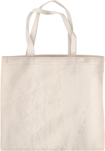
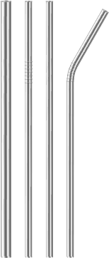
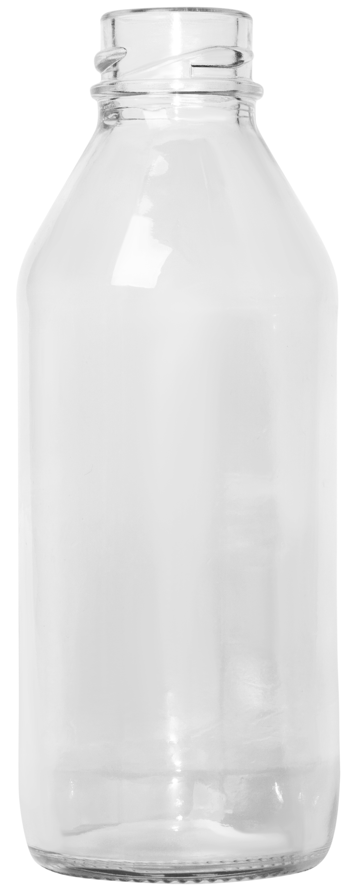
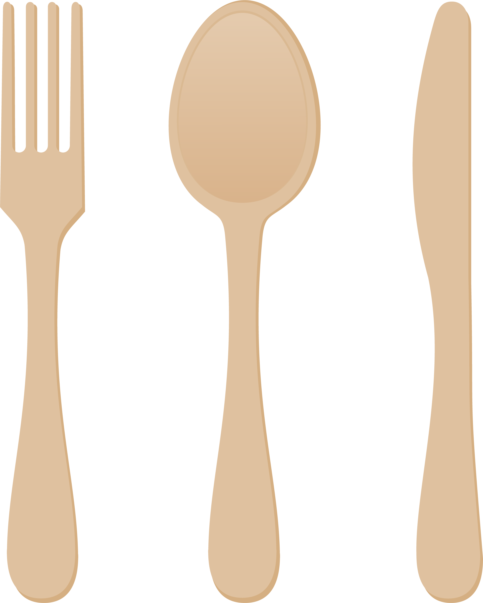
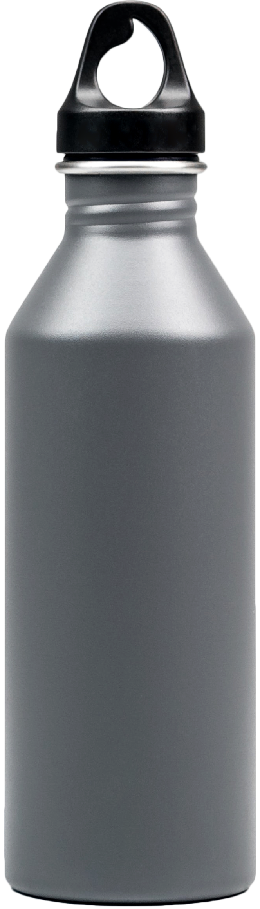
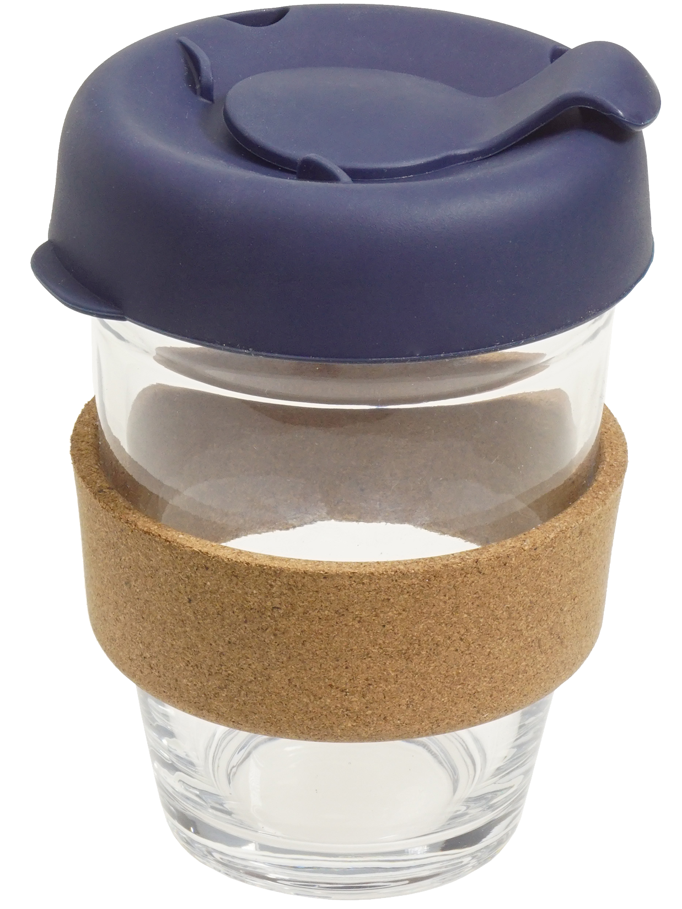
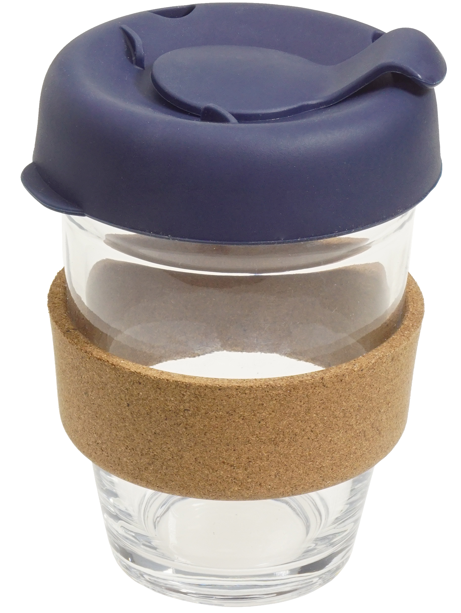
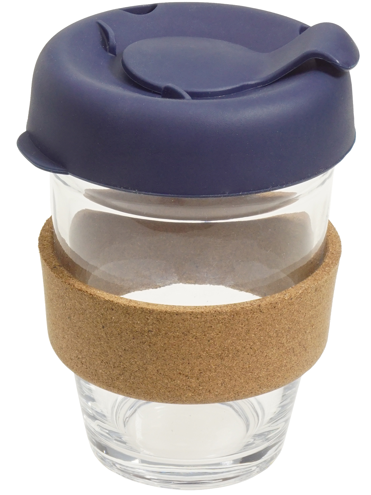

Icons
|
Home |
Quiz |
Tutorial |
Menu |
|
Recycling |
User |
Check |
Back |
Icons used will be simple and solid filled with rounded corners to compliment our space and earth theme.These icons will help users navigate through our application and convey information visually.
Graphics





 



Graphics will have a minimum width of 80px / 5rem.
Images used are high quality and related to our application’s topic about sustainable habits
such as using reusable straws, recycling bottles and repairing old clothing.